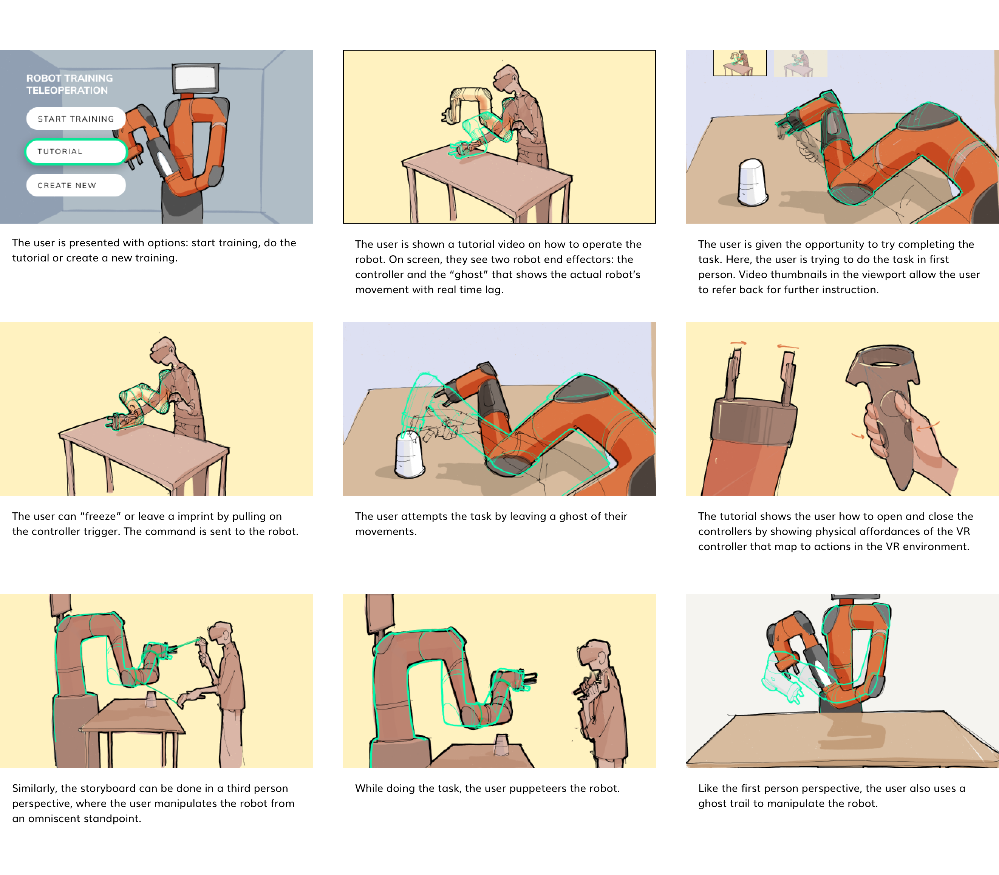

Robotics (RPAD) Lab
Lucas Ochoa
Tiffany Chen
Mary Safy
2 others
2019: Our client was the Robots Perceiving and Doing Lab at Carnegie Mellon University. Their long term goal was to investigate the technologies (models, algorithms, interfaces) that would go towards a future where people could teach robots various tasks. Our short term goal in this project was to design and build a virtual reality (VR) environment where users control a remote robot to demonstrate how a task should be done. The interface would capture the "demonstration" data for later learnings.
Designer
Developer
Tiffany and I coded out the Unity + websocket app for the Vive headset that interfaced with the lab's robot operating system. A Kinect (3D depth camera) above the physical robot station streamed a live point-cloud to the headset
Storyboards drawn on my iPad, then compiled/dicussed with team in Figma over the course of literature review
A video version of a 1st person point of view in a VR experience with a moderator prompting tasks. Animated in Blender (by Mary Safy)